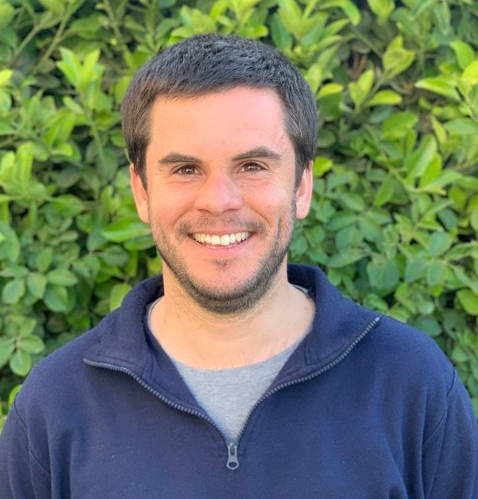
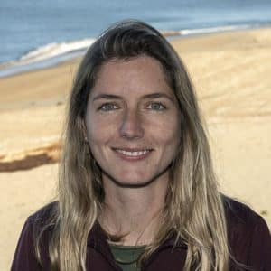
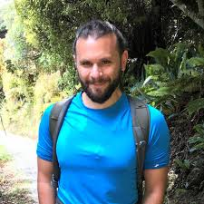

The organizers

Miguel M. Sandin
miguel.mendez@ibe.upf-csic.esPostdoctoral fellow at the Institute of Evolutionary Biology (CSIC-UPF), Barcelona, Spain

Natalia Llopis Monferrer
nllopis@mbari.orgPostdoctoral fellow at Monterey Bay Aquarium Research Institute, California, USA
Nicole Coots
nicole.coots@botany.ubc.caPostdoctoral fellow at the Department of Botany, University of British Columbia, Vancouver, Canada
Among the Foraminifera people:
Mattia Greco
mgreco@icm.csic.esPostdoctoral fellow at the Institute of Marine Science (CSIC), Barcelona, Spain

Raphael Morard
rmorard@marum.deSenior scientist at the Center for Marine Environmental Sciences, Bremen, Germany